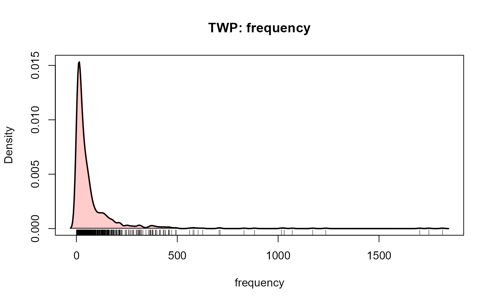

The Toronto Word Pool
TWP.RdThe Toronto Word Pool consists of 1080 words in various grammatical classes together with a variety of normative variables.
The TWP contains high frequency nouns, adjectives, and verbs taken
originally from the Thorndike-Lorge (1944) norms.
This word pool has been used in hundreds of studies at Toronto and elsewhere.
Usage
data(TWP)Format
A data frame with 1093 observations on the following 12 variables.
itmnoitem number
wordthe word
imageryimagery rating
concretenessconcreteness rating
lettersnumber of letters
frequencyword frequency, from the Kucera-Francis norms
foaa measure of first order approximation to English. In a first-order approximation, the probability of generating any string of letters is based on the frequencies of occurrence of individual letters in the language.
soaa measure of second order approximation to English, based on bigram frequencies.
onrOrthographic neighbor ratio, taken from Landauer and Streeter (1973). It is the ratio of the frequency of the word in Kucera and Francis (1967) count divided by the sum of the frequencies of all its orthographic neighbors.
dictcodedictionary codes, a factor indicating the collection of grammatical classes, 1-5, for a given word form
.
In the code, "1" in any position means the item had a dictionary definition as a noun;
similarly, a "2" means a verb, "3" means an adjective, "4"
means an adverb, and "5" was used to cover all other grammatical
categories (but in practice was chiefly a preposition). Thus
an entry "2130" indicates an item defined as a verb, noun, and
an adjective in that order of historical precedence.
nounpercent noun usage. Words considered unambiguous based on
dictcodeare listed as 0 or 100; other items were rated in a judgment task.canadiana factor indicating an alternative Canadian spelling of a given word
Details
The last 13 words in the list are alternative Canadian spellings of words
listed earlier, and have duplicate itmno values.
Source
Friendly, M., Franklin, P., Hoffman, D. & Rubin, D. The Toronto Word Pool, Behavior Research Methods and Instrumentation, 1982, 14(4), 375-399. http://datavis.ca/papers/twp.pdf.
References
Kucera and Francis, W.N. (1967). Computational Analysis of Present-Day American English. Providence: Brown University Press.
Landauer, T. K., & Streeter, L. A. Structural differences between common and rare words: Failure of equivalent assumptions for theories of word recognition. Journal of Verbal Learning and Verbal Behavior, 1973, 11, 119-131.
Examples
data(TWP)
str(TWP)
#> 'data.frame': 1093 obs. of 12 variables:
#> $ itmno : int 1 2 3 4 5 6 7 8 9 10 ...
#> $ word : chr "abide" "able" "aboard" "about" ...
#> $ imagery : num 2 2.7 3.6 1.4 4 3 3.6 4.6 4.5 3.3 ...
#> $ concreteness: num 2.8 3 4.2 1.9 4 3.7 4.4 3.6 3.4 3.4 ...
#> $ letters : int 5 4 6 5 5 7 6 6 5 6 ...
#> $ frequency : int 7 216 25 1815 296 53 28 13 18 72 ...
#> $ foa : num -27.6 -23.4 -32.4 -28.5 -29.4 -35.3 -30.5 -34 -28.2 -32.3 ...
#> $ soa : num -24.5 -18.4 -30.8 -23 -22.2 -32.3 -28.9 -38.2 -22.1 -32.5 ...
#> $ onr : num 0.09 0.96 0.93 1 0.99 1 0.88 1 0.86 0.89 ...
#> $ dictcode : Factor w/ 49 levels "1","2","3","4",..: 2 3 3 4 5 1 3 2 9 2 ...
#> $ noun : int 0 0 0 0 0 100 0 0 32 0 ...
#> $ canadian : Factor w/ 2 levels "0","1": 1 1 1 1 1 1 1 1 1 1 ...
summary(TWP)
#> itmno word imagery concreteness
#> Min. : 1.0 Length:1093 Min. :1.200 Min. :1.600
#> 1st Qu.: 271.0 Class :character 1st Qu.:3.000 1st Qu.:3.200
#> Median : 540.0 Mode :character Median :4.100 Median :4.000
#> Mean : 540.3 Mean :4.197 Mean :4.342
#> 3rd Qu.: 809.0 3rd Qu.:5.400 3rd Qu.:5.500
#> Max. :1080.0 Max. :6.800 Max. :7.000
#>
#> letters frequency foa soa
#> Min. :3.00 Min. : 0.00 Min. :-48.60 Min. :-46.50
#> 1st Qu.:6.00 1st Qu.: 12.50 1st Qu.:-36.80 1st Qu.:-32.20
#> Median :6.00 Median : 30.00 Median :-33.20 Median :-29.00
#> Mean :6.27 Mean : 75.45 Mean :-33.47 Mean :-29.18
#> 3rd Qu.:7.00 3rd Qu.: 72.00 3rd Qu.:-30.20 3rd Qu.:-25.90
#> Max. :8.00 Max. :1815.00 Max. :-18.90 Max. :-17.00
#> NA's :6
#> onr dictcode noun canadian
#> Min. :0.0000 1 :253 Min. : 0.00 0:1080
#> 1st Qu.:0.6500 12 :211 1st Qu.: 0.00 1: 13
#> Median :0.9900 2 :155 Median : 39.00
#> Mean :0.7987 3 :101 Mean : 47.11
#> 3rd Qu.:1.0000 21 :100 3rd Qu.:100.00
#> Max. :1.0000 4 : 61 Max. :100.00
#> NA's :7 (Other):212 NA's :118
# quick view of distributions
boxplot(scale(TWP[, 3:9]))
plotDensity(TWP, "imagery")
plotDensity(TWP, "concreteness")
plotDensity(TWP, "frequency")

# select low imagery, concreteness and frequency words
R <- list(imagery=c(1,5), concreteness=c(1,4), frequency=c(0,30))
pickList(TWP, R)
#> list itmno word imagery concreteness letters frequency foa soa
#> 1037 1 1037 virtue 3.1 2.1 6 30 -32.7 -33.2
#> 493 1 493 humble 4.0 2.6 6 18 -35.1 -30.2
#> 78 1 78 assist 2.9 3.9 6 26 -29.3 -25.6
#> 1033 1 1033 venture 3.4 3.6 7 19 -36.1 -29.0
#> 877 1 877 scarcely 2.2 2.9 8 24 -42.2 -36.1
#> 969 1 969 surround 3.9 3.9 8 5 -41.8 -33.7
#> 950 1 950 stupid 4.8 3.5 6 24 -33.3 -29.5
#> 732 1 732 perceive 3.3 2.7 8 13 -41.2 -35.3
#> 212 1 212 complain 4.6 3.8 8 11 -42.6 -32.7
#> 382 1 382 expose 4.1 3.2 6 8 -34.8 -28.8
#> onr dictcode noun canadian
#> 1037 1.00 1 100 0
#> 493 0.55 32 0 0
#> 78 1.00 21 NA 0
#> 1033 0.90 21 19 0
#> 877 1.00 4 0 0
#> 969 1.00 21 12 0
#> 950 1.00 31 NA 0
#> 732 1.00 2 0 0
#> 212 1.00 2 0 0
#> 382 1.00 21 3 0
# dplyr now makes this much more flexible
if (require(dplyr)) {
# select items within given ranges
selected <- TWP |>
filter( canadian == 0) |> # remove Canadian spellings
filter( imagery <= 5, concreteness <= 4, frequency <= 30) |>
select(word, imagery:frequency )
str(selected)
# get random samples of selected items
nitems <- 5
nlists <- 2
lists <- selected |>
sample_n( nitems*nlists, replace=FALSE) |>
mutate(list = rep(1:nlists, each=nitems))
str(lists)
lists
}
#> Loading required package: dplyr
#>
#> Attaching package: 'dplyr'
#> The following objects are masked from 'package:stats':
#>
#> filter, lag
#> The following objects are masked from 'package:base':
#>
#> intersect, setdiff, setequal, union
#> 'data.frame': 269 obs. of 5 variables:
#> $ word : chr "abide" "absorb" "abuse" "accord" ...
#> $ imagery : num 2 4.6 4.5 1.8 4.2 2.1 3.7 3.2 3.3 1.6 ...
#> $ concreteness: num 2.8 3.6 3.4 2.6 3.5 3.6 3 3.9 3.5 2 ...
#> $ letters : int 5 6 5 6 6 8 6 5 6 4 ...
#> $ frequency : int 7 13 18 9 10 3 10 13 10 10 ...
#> 'data.frame': 10 obs. of 6 variables:
#> $ word : chr "splendid" "ascend" "consent" "cunning" ...
#> $ imagery : num 3 3.6 2.8 2.9 4.4 3.5 2.2 1.9 3 4.1
#> $ concreteness: num 3 3.4 3.6 2.8 3.4 3.9 2.7 3 3.9 2.8
#> $ letters : int 8 6 7 7 5 6 5 6 8 8
#> $ frequency : int 20 1 17 5 17 14 16 13 3 21
#> $ list : int 1 1 1 1 1 2 2 2 2 2
#> word imagery concreteness letters frequency list
#> 1 splendid 3.0 3.0 8 20 1
#> 2 ascend 3.6 3.4 6 1 1
#> 3 consent 2.8 3.6 7 17 1
#> 4 cunning 2.9 2.8 7 5 1
#> 5 weary 4.4 3.4 5 17 1
#> 6 attach 3.5 3.9 6 14 2
#> 7 ample 2.2 2.7 5 16 2
#> 8 convey 1.9 3.0 6 13 2
#> 9 commence 3.0 3.9 8 3 2
#> 10 helpless 4.1 2.8 8 21 2